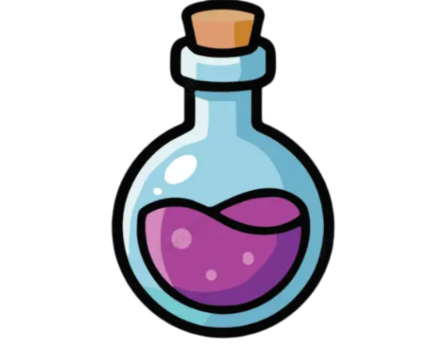
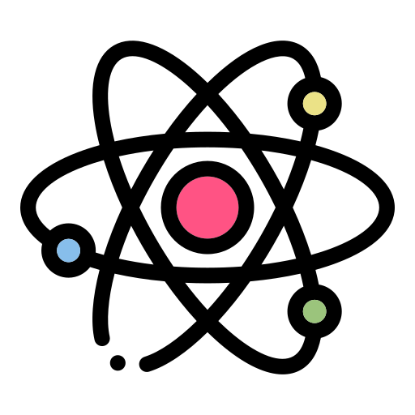

Explore os mistérios da vida, desde a complexidade das células até o
equilíbrio dos ecossistemas. Aqui, você aprenderá como a natureza se
conecta e como cada ser vivo desempenha um papel fundamental na
engrenagem do nosso planeta.
ESTUDAR
Explore as transformações da matéria, desde a estrutura dos átomos até as reações que acontecem no
dia a dia. Aqui, você entenderá como as substâncias interagem, se combinam e formam tudo ao nosso
redor, revelando a química por trás do mundo.
Explore as leis que governam o universo, desde o movimento dos corpos até as forças invisíveis que
moldam a realidade. Aqui, você descobrirá como a energia, o tempo e o espaço se conectam para
explicar os fenômenos do cotidiano e do cosmos.